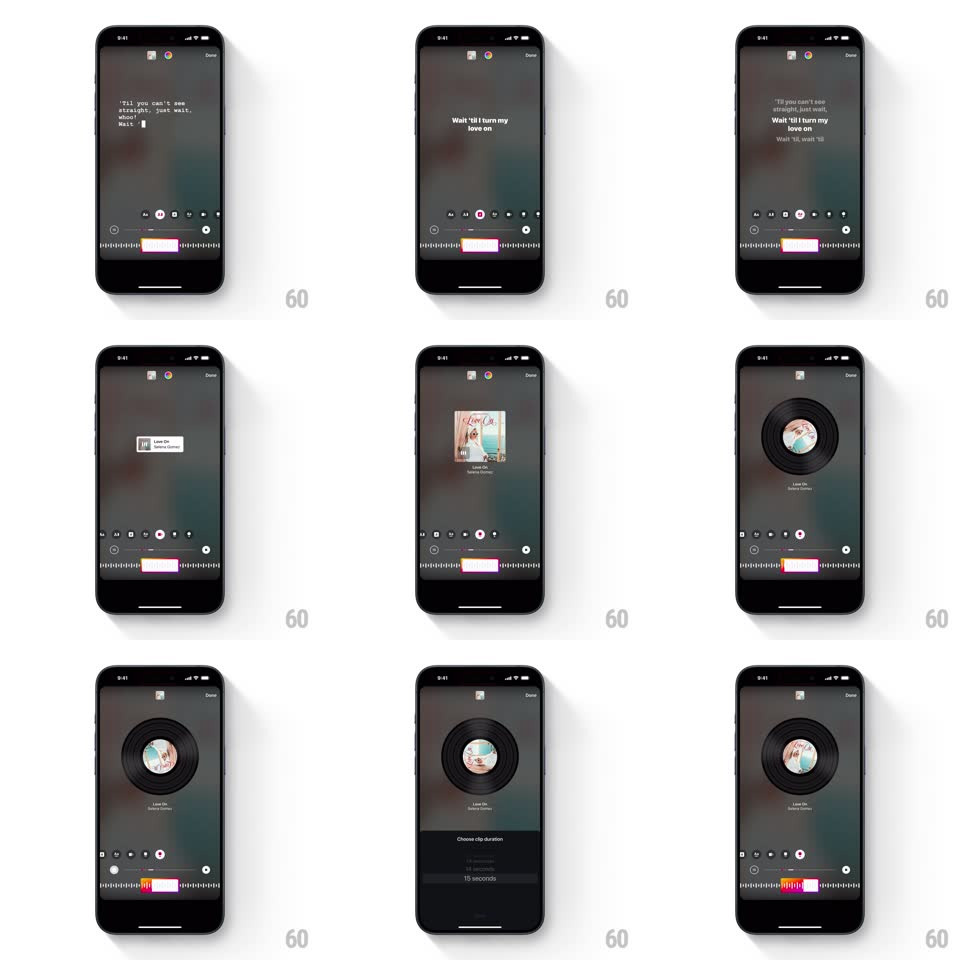

Media
Frame-by-frame

Rebuild this interaction 1:1: Instagram Stories' music sticker styles - a story with a song attached shuffles through display modes (bold lyric type, typewriter lyrics, small album card, spinning vinyl) while a waveform strip at the bottom selects the clip and a duration sheet sets its length.

Rebuild this interaction 1:1: Instagram Stories' music sticker styles - a story with a song attached shuffles through display modes (bold lyric type, typewriter lyrics, small album card, spinning vinyl) while a waveform strip at the bottom selects the clip and a duration sheet sets its length.
## Integration
Integration: stack-agnostic spec - springs given as stiffness/damping, timed motions as duration + curve; map every value to your framework and animation library of choice.
## Scene
Story composer over a muted background: center stage for the music sticker, a style-picker dot row above the bottom waveform, the waveform strip with a pink selection window, "Done" top-right. Modes: (1) giant bold lyrics ("WAIT 'TIL I TURN MY LOVE ON"), (2) typewriter lyric lines, (3) compact white album card ("Love On - Selena Gomez"), (4) vinyl record with the album art as its label. Duration sheet: "Choose clip duration" with a seconds picker.
## Motion spec
Pattern: style shuffle + clip scrubbing.
- Tap a style dot: the current sticker crossfades out (180ms) and the new one in (220ms) - lyrics modes scale from 0.95, the vinyl scales up from 0.7 with a spring (~320/22); the active dot fills white.
- Lyrics modes animate live: lines highlight word-by-word in sync with playback (each word brightens ~80ms); the typewriter mode reveals characters progressively with a cursor.
- Vinyl mode: the record spins continuously (~1.8s per revolution) with the album art rotating as its center label.
- Drag the pink window along the waveform: the sticker's lyric text updates live to the windowed timestamp; the window has grab handles and resists at clip bounds.
- "Choose clip duration": the sheet rises (spring ~320/26), the duration row highlights, and the waveform window resizes with a spring (~360/24) to match.
## Calibration
- Playback position, lyric highlight, and waveform window are one clock - all update together.
- Style shuffles never restart the audio.
## Reduced motion
Stickers crossfade; lyrics highlight line-by-line; vinyl doesn't spin.
## Don't miss
- The waveform's played region uses a hotter pink than the upcoming region.
- The album card mode is deliberately tiny - a minimal counterpoint to the loud lyric modes.